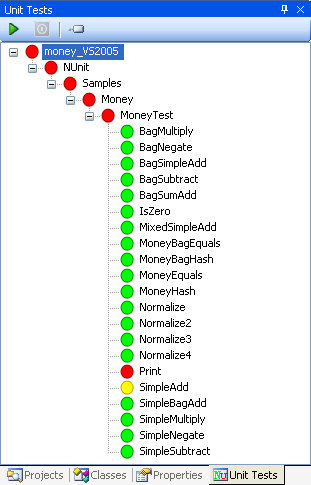

The Unit Tests window in SharpDevelop 2.1 (revision 2039) has been changed in order to fix a few bugs and problems that it had. How you unit test in SharpDevelop is still the same, as explained in the Unit Testing feature tour, but there are some new features shown below. Most of the changes have been behind the scenes so everything should look the essentially the same.

By default SharpDevelop runs tests in the MTA. This is the default behaviour of NUnit which is what SharpDevelop uses.
To run your tests in an STA you can create an app.config file for your test project as shown below:
<configuration>
<configSections>
<sectionGroup name="NUnit">
<section name="TestRunner"
type="System.Configuration.NameValueSectionHandler" />
</sectionGroup>
</configSections>
<NUnit>
<TestRunner>
<!-- Valid values are STA,MTA. Others ignored. -->
<add key="ApartmentState" value="STA" />
</TestRunner>
</NUnit>
</configuration>
In this section we will look at what is actually happening when you open a solution and then run its tests.
When a solution is opened in SharpDevelop any project that has a reference to the NUnit.Framework assembly will have a corresponding tree node added to the Unit Tests tree. Expanding the project node shows test classes grouped according to namespace. Expanding a test class node shows the individual test methods.
What classes and methods are considered to be test fixtures and tests are all determined based on the information from SharpDevelop's parser. If a class has a [TestFixture] attribute then it is considered a test class. If a method has a [Test] attribute then it is considered a test method.
The Unit Tests window will update itself as the parser notices changes in your code. So new test classes and methods will appear in the test tree as you type.
Whenever you run unit tests in SharpDevelop nunit-console.exe is involved. This NUnit-Console is a slightly modified version of that which ships with NUnit 2.2.8. It has three extra command line arguments:
Added by Daniel Grunwald in SharpDevelop 2.0. This allows NUnit-Console to run a single test and takes the fully qualified test method name.
Used to specify the filename where the test results are written to as they occur.
If this argument is used then NUnit-Console will only run the tests that exist in the specified namespace. SharpDevelop sets this argument when you select a namespace node in the Unit Tests tree and run the tests.
As the tests are run SharpDevelop monitors the generated test results file. As each test result is added to the file the Unit Tests tree is updated with the usual red, green and yellow colours. Any test failures are added to the Errors window.
Whenever you run a test or set of tests nunit-console.exe will be run, either by SharpDevelop itself, or by NCover when looking at code coverage, or by the debugger when you need to debug your tests.
[Update 25th November, 2006]
In revision 2076 you can now select a namespace node in the Unit Tests tree and run only those tests for that namespace. This was done by adding a new namespace filter argument to nunit-console.exe. The post has been updated to reflect this.